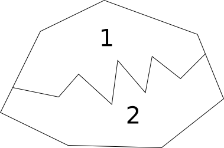
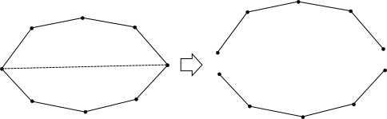
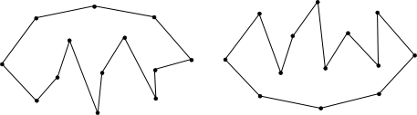
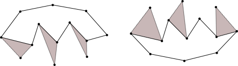
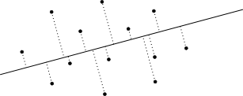
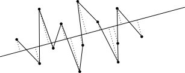

In this problem, we are given a set of points on a 2D plane. The goal is to construct a single simple polygon that uses all of the points. To make things interesting, the area of the resulting polygon has an additional constraint; it must be strictly more than half of the area of the largest polygon constructed from any subset of points. A polygon that takes up maximum area but can use a subset of the points is always the convex hull of the points.
For the small data case, we choose an exhaustive approach that finds the polygon with maximal area. Assuming that it is possible to construct a polygon with a large enough area (see the explanation of the large case for justification), the maximal area polygon will be a solution. The question now becomes how to construct a polygon of largest area. We permute the order of the fence posts. For each ordering, we verify the polygon has no intersecting edges (being careful of edges that pass through fence posts). We keep the polygon with the largest area. With N=10 fence posts, this takes no more than O(N! * T), where T is how long it takes to validate a polygon and compute its area. Verification can be implemented easily in O(N2) time. Polygon area can be done in O(N) time. So the resulting runtime is O(N! * N2). For N=10, this is around 500 million basic operations, which is relatively quick.
For the large case, N = 1000, exhausting even a subset of fence post permutations it too costly. An algorithm over O(N^3) may take too long to compute. We explore a more direct method.
As mentioned earlier, the polygon with the largest possible area using a subset of the fence posts is the convex hull. Suppose we break the convex hull into two polygons, one of these polygons must contain at least half of the convex hull's area. Notice that regardless of how the convex hull is split, one of the resulting polygons is always at least half of the area.
Suppose we have a way to split the convex hull using the interior fence posts. This results in a polygon with at least half of the area of the convex hull, and at least one isolated vertex on the exterior of the polygon. We just need to connect the isolated vertices to the polygon without introducing intersecting edges. This process could only possibly add more area to the polygon, hence the final polygon is strictly more than half of the convex hull's area.
Making the above observation as the basis of our solution, we can arbitrarily split the convex hull into the upper half and lower half.
Note that the union of upper and lower polygon contains the full area of the convex hull. Furthermore the interior path cannot cause intersecting edges, because we chose to sort the points from left to right (note, special care must be taken when ties are involved, see special cases). One of these polygons has at least half the area of the convex hull, as explained above.
As mentioned, the larger of the two polygons will not contain all of the points. However, we can extend the polygon to use all the points. This is done by iteratively adding a point to the polygon. Because all exterior points are on the convex hull, the polygon must increase in area as we do this. The points are added to the polygon by taking an exterior point and "connecting" it to the point left and right of it on the polyline dividing the convex hull. For an optimization, the exterior points can be added at the same time as forming the polyline if you know the exterior points when constructing the polyline.
On the left example, the leftmost and rightmost points are connected. In this case, the convex hull is split into the full polygon and a line segment. The full polygon, a.k.a. the convex hull, can simply be used as the final answer.
The second special case, above on the right, can occur when points share the same x coordinate and "left to right" is not well defined. An elegant way to handle this case is to project all of the points onto a "nearly horizontal" line and retain the scalar project values. If we pick a line that is not parallel or orthogonal to the line formed by any two points in our input, then each projected point will have a unique position on the "horizontal" line. A line that passes through points (0,0) and (200000,1) will work.
Once all points are projected onto the line, the sort order of the points is determined by the projected value. If we take a collection of points and go through them in this order we form a polyline.
We can show that running this algorithm including the two endpoints of one of our half hulls and all the middle points will create a closed polygon. Notice that when you also expand the middle set to also contain all points that are in the half hulls that the polygon grows in size. This is because the points added are outside our current polygon as a property of the half hull. A line coming from the middle points will move away from the first polygon towards the hull and back to the middle points when following our order. This technique ensures that the area of our polygon grows bigger than the polygon with just the middle points.
To sum up the solution, we will reiterate the main steps of our algorithm: